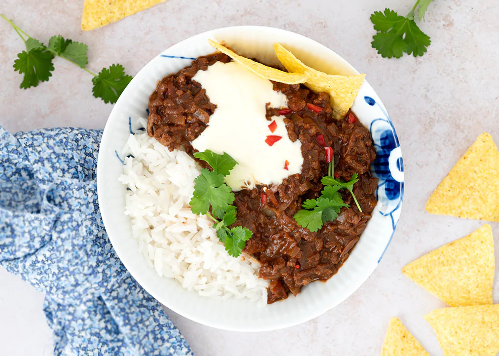

Chili con Carne

Description
A delicious Chili con Carne that almost makes you wish you were not born in the boring north
Ingredients
- 1 tspn cumen
- 1 tspn cinnamon
- 1 tspn chili flakes
- 2 pieces of garlic
- 2 onions
- 350gr minces meat
- 1 can of squashed tomatoes
- 2 cans of kidney beans
Steps
- Fry garlic, cumen, cinnamon and chili together for a couple of minutes
- Add onions and fry until they are transparent
- Add minced meat and fry untill it is "browned"
- Add squashed tomatoes and let it simmer for 30 minutes
- Add beans and warm the pot properly through